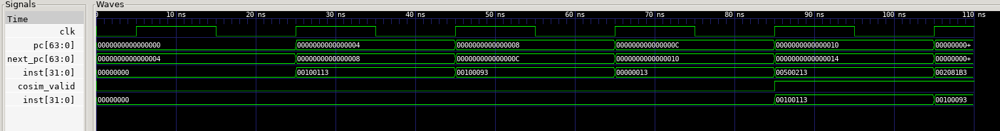
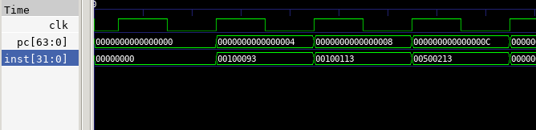
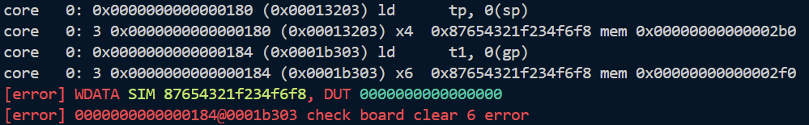

理解流水线的基本思想，基于已经实现的单周期cpu实现一个5级流水线cpu。
问题 1：在实现中间段寄存器的时候，接口过多导致写起来很麻烦而且代码冗长。
解决方案：使用core_struct.vh中定义的结构体来简化接口的定义与传递。
问题 2：第一个周期inst取到的指令是高32位，第二个周期才是低32位，导致取指错误。
解决方案：
我最开始inst的选取方式是assign inst = (pc[2]) ? imem_ift.r_reply_bits.rdata[63:32] : imem_ift.r_reply_bits.rdata[31:0];，和上学期做project时一样（而且本来就应该这样取），但是本实验中发现这样取是反的。所以修改为assign inst = (pc[2]) ? imem_ift.r_reply_bits.rdata[31:0] : imem_ift.r_reply_bits.rdata[63:32];，就能正确取到指令了。
修改前：


imem_ift.r_reply_bits.rdata在这个周期还没有准备好（为0），因此inst的取值也为0.到了下一个周期N+1，imem_ift.r_reply_bits.rdata根据上一个周期pc=0取到了指令0010011300100093，但是在这个周期pc已经变为4，所以按照常规取法，inst取到的是高位00100113，但是实际上应该取低位000100093。这样inst和pc就会错开一个周期。我这样颠倒取值可以刚好抵消这一个周期的偏差。更加常规的做法可能是再定义一个寄存器将if阶段的pc延迟一个周期，rdata根据原始pc取值，inst根据延迟后的pc取值。
问题 3：在进行跳转指令（beq）时pc不正确。
解决方案：
查看波形发现跳转指令使使flush为1，导致valid变为0。而我原本的midreg中设置的是当reg_in.valid==1时才reg_out <= reg_in，这样就会导致之后的中间段寄存器无法存储更新后的信号，导致pc的更新停滞。
修改如下：
end else if(reg_in.valid) begin
reg_out_tmp <= reg_in;
end
修改为：
end else begin
reg_out_tmp <= reg_in;
end
这样valid信号只会用于告诉测试程序当前指令是否有效，而不会影响中间段寄存器的更新。
问题 4：在遇到连续的lb指令时，第二条指令的wdata会被置为0。

DataPkg和MaskGen模块中对mem_op和dmem_waddr的使用错误，应该使用ex阶段的信号而不是mem阶段的信号。修改后如下：
DataPkg data_pkg (
.mem_op(id_ex_reg_out.mem_op), // <--- use signal from EX stage
.reg_data(id_ex_reg_out.reg_data_2), // <--- use signal from EX stage
.dmem_waddr(alu_res_ex), // <--- use signal from EX stage
.dmem_wdata(dmem_wdata_mem)
);
MaskGen mask_gen(
.mem_op(id_ex_reg_out.mem_op), // <--- use signal from EX stage
.dmem_waddr(alu_res_ex), // <--- use signal from EX stage
.dmem_wmask(dmem_wmask_mem)
);
DataTrunc trunc(
.dmem_rdata(dmem_rdata_mem),
.mem_op(ex_mem_reg_out.mem_op),
.dmem_raddr(ex_mem_reg_out.alu_res),
.read_data(mem_rdata_trunc_mem)
);
1. 对于 syn.asm 的 fibonacci 的如下代码段，请计算该 loop 在流水线 CPU、SCPU、多周期 CPU 各自的 CPI，对比三者的 CPI。
流水线CPU：
总指令数为16，执行这16条指令需要16个周期，但是由于bne指令会引起if和id阶段的flush，造成两个周期的延迟，因此总共花费18个周期。
SCPU：
对于单周期cpu，每条指令都在一个周期内完成，因此
多周期CPU：
多周期cpu将每条指令分成若干个阶段，每个阶段用一个周期来完成。对于给定的代码段：
R-Type：3个add指令，每个需要4个周期（IF，ID，EX，WB），共12个周期。
I-Type：12个addi指令，每个需要4个周期（IF，ID，EX，WB），共48个周期。
Branch：1个bne指令，需要3个周期（IF，ID，EX），共3个周期。
总指令数为16条，因此
2. 假设 SCPU 的时钟频率是 100 MHz，如果流水线想要有比单周期 CPU 更高的执行效率，它的时钟频率至少需要是多少？
假设流水线CPU的CPI就是上一题计算的1.125，即
单周期CPU的CPI为1，因此流水线CPU的时钟频率需要满足
代入
解得
3. 从时钟频率和 CPI 的角度解释，为什么多周期 CPU 优于单周期 CPU，流水线 CPU 优于多周期 CPU。
比较不同类型的CPU的性能可以比较最终的执行时间：
假设指令数都是一样的，我们只需要比较三种CPU的CPI和时钟频率。
MSPU vs SCPU:
Pipeline vs MSPU:
真难啊，感觉第一个周期处理起来就有点棘手，实验的trick也造成了一定困难。而且实验指导里并没有说要把文件迁移到project目录下，所以最开始找不到makefile文件。还有就是testbench里cosim_wdata写成了date，看着有点难受，但是这个接口好像连到了很多地方，改起来还有点麻烦。